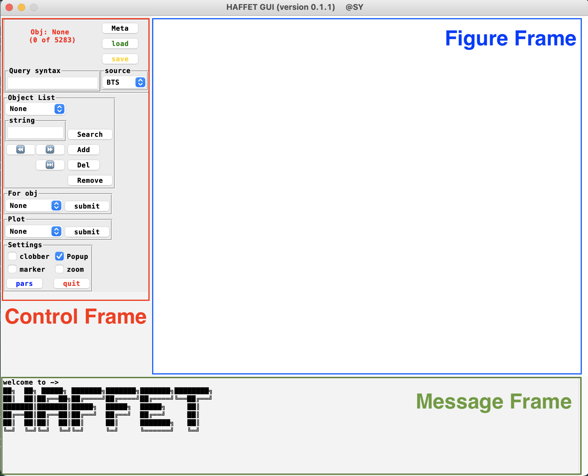
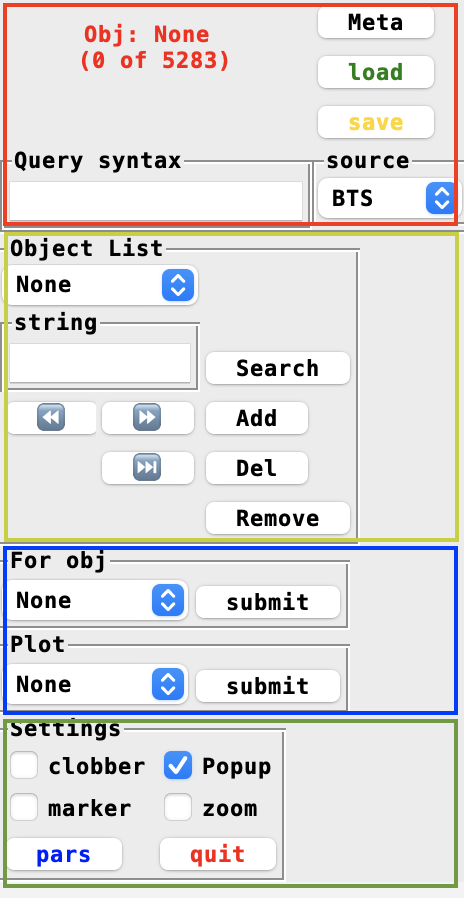
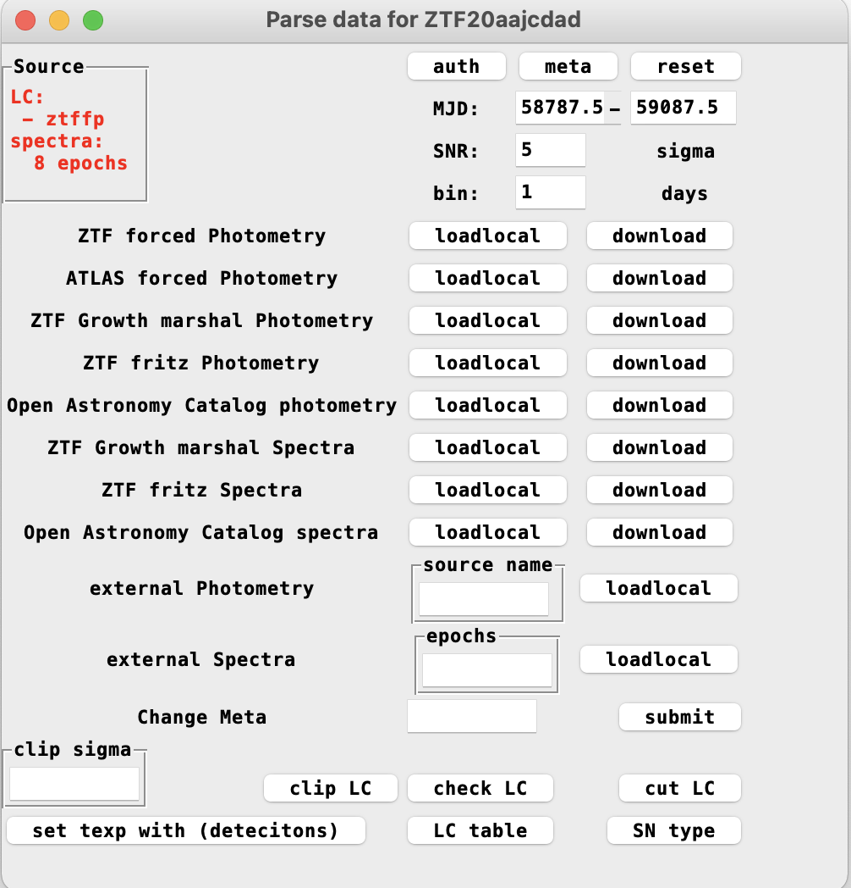
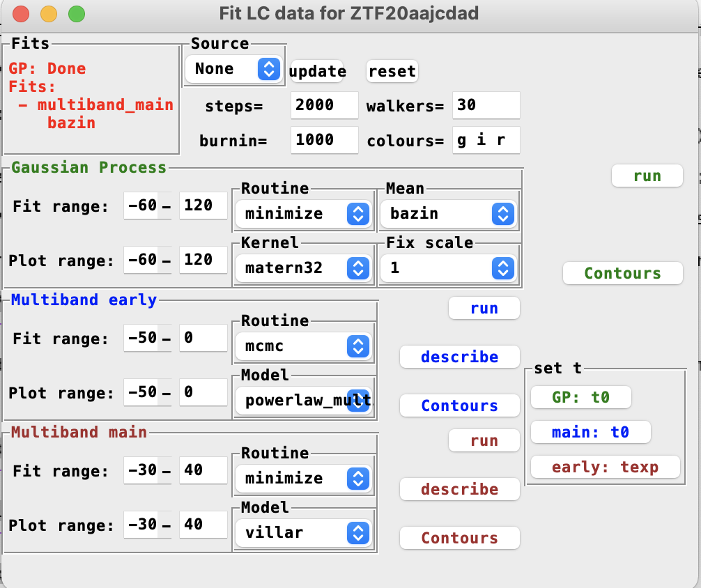
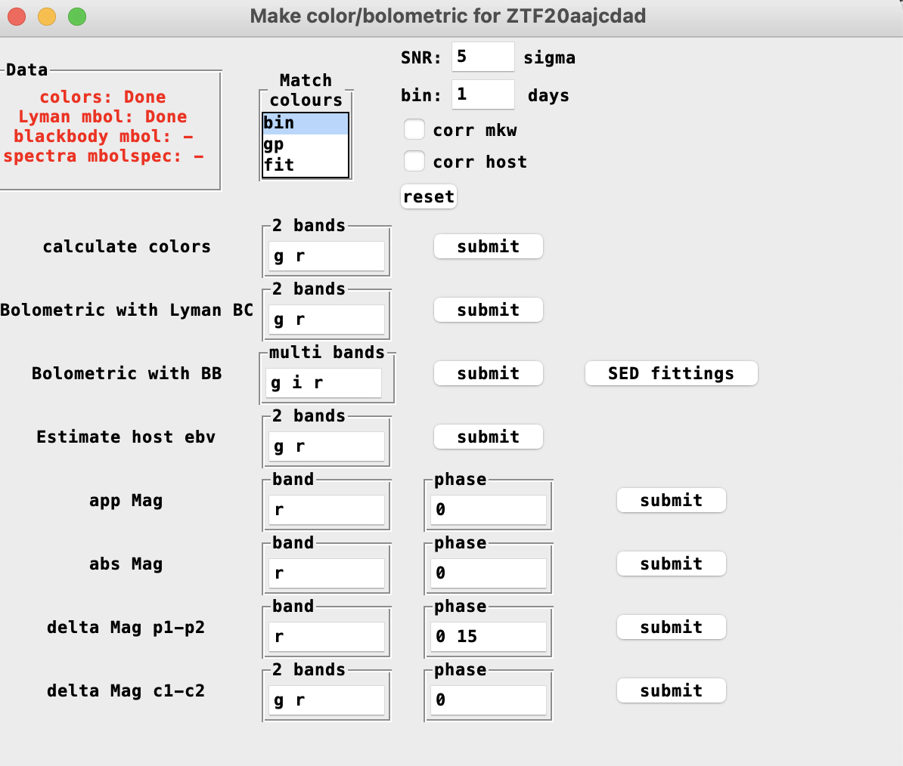
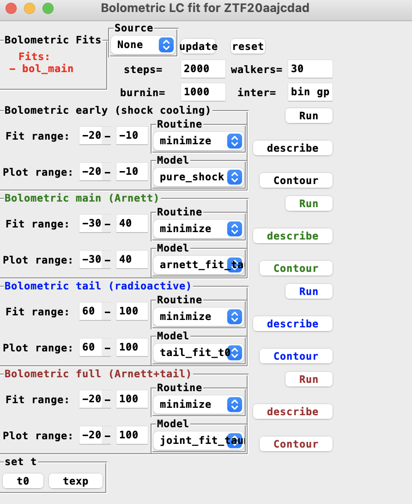
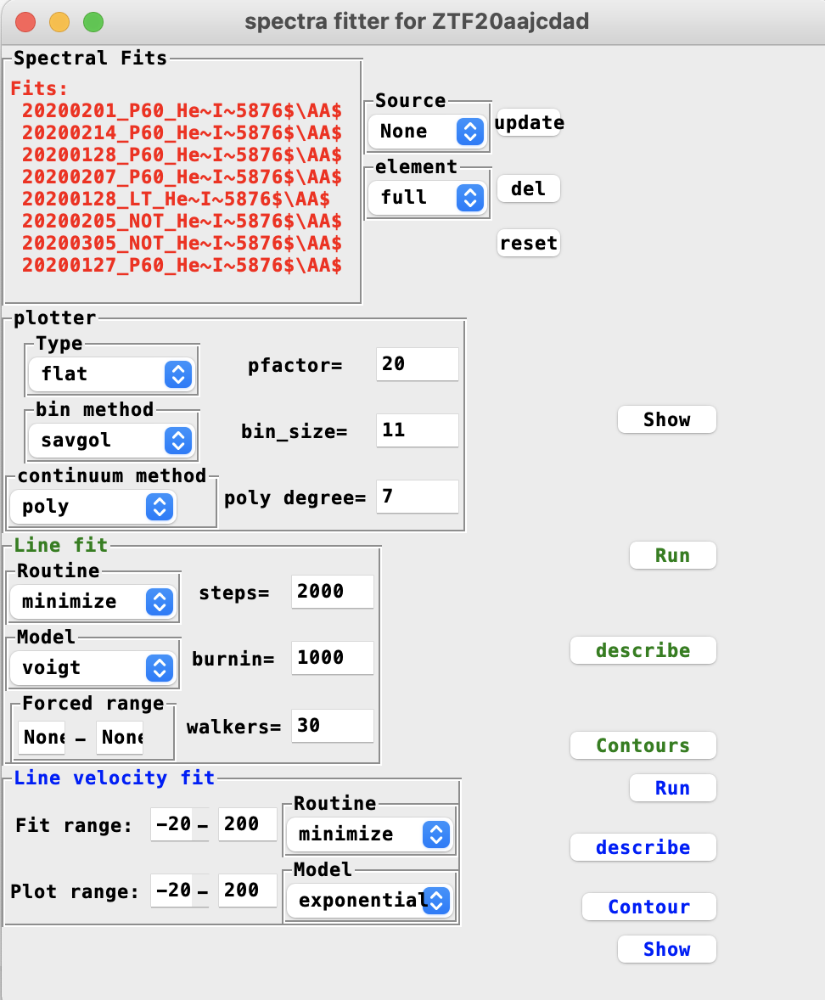
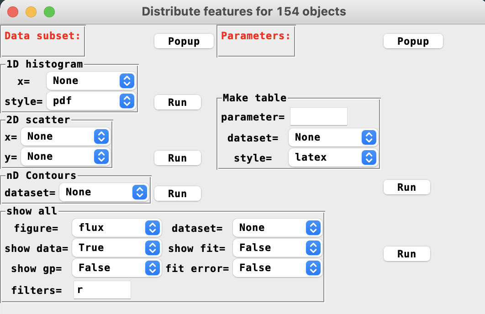
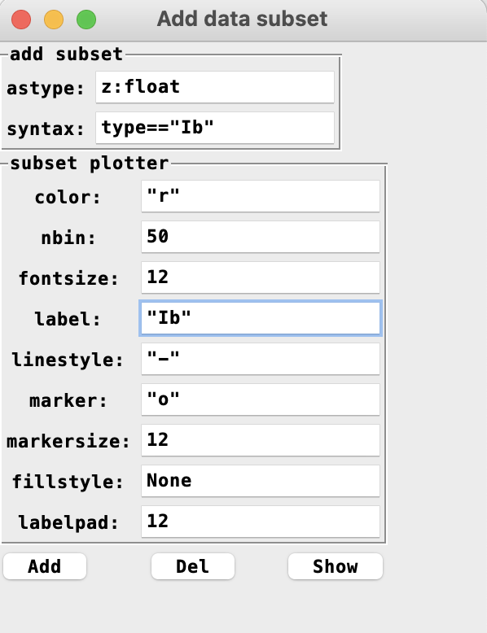
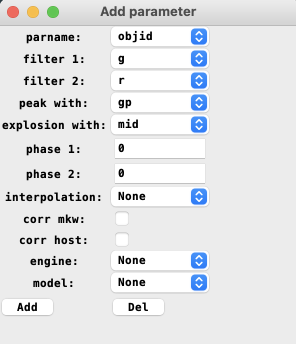

The Graphical user interface¶
Start the GUI¶
The HAFFET GUI can be started with:
>>> sdapy_gui
This terminal command will start an interface as below:
{kind=link}
The interface can be divided into 3 main parts, i.e. the control frame for user options, the figure frame for plots, and the message frame for notices, warnings and other text outputs.
In the control frame, there’re four main panels:
{kind=link}
The red one is used to read and define a meta table, that includes a list objects as well as their informations, e.g. coordinates, redshifts, etc. The yellow panel is designed for users to decide which objects should be included for analysis. One can run tasks and plots with commands in the blue area, while the green region provides a few options as global settings, e.g. once some fittings had been done, the samplings would be stored in the data directory, checked the clobber button will remove the cache and rerun fittings, while if unchecked, the code will restore samplings from exisiting files.
Parse meta table¶
There’re two build-in sources available, i.e. Bright Transient Survey (BTS) and the Open Astronomical Catalog (OAC), that can provide mate table. One can also use their own table (see here for the table formats).
The table is read as a pandas.dataframe, and the query syntax can be used to select objects, e.g.
type in ["Ib", "Ic"]
will only remain those objects with type as Ib or Ic. The load and save commands are used to store and restore data and fittings into local data directory. For instance to an object with objid as SN1234, the store command will make a cache file, ZTFDATA/cache/SN1234_data.clf, and the next time, one start the GUI, the load command will bring everything that had been done in the last time back.
Add objects¶
Once a meta table parsed correctly, the next step is to add objects from the meta. The yellow panel in the control frame is designed for users to decide which objects should be incldued for analysis. Any input string would be matched with the objid, aliasid and the type column. The matching results would be shown in the message frame. If there’re more than one result matched, one should give a more accurate string, till only one object is matched, and then click add button to include it into object list. The del command is to remove the current object from the list, while the remove command will remove the cached file as well if there’re any.
Input data¶
Once an object is added successfully, we can start the game. Let’s go to the blue part. Here there’re two dropdown menus, one for running codes, and the other for running plots. In the first drop down menu, there’re 5 main tasks available, i.e. data preparation, multiband LC fits, SED fits, bolometric LC fits, and the spectral line fits. And the second drop down menu provides 9 style of plots, i.e. the flux LC, mag LC, colour curve, bolometric LC, spectra and the summarize plot is the gather of all of them. Additionally, the finder can download images from Panstarrs archive based on the coordinates, and make a finder for the object; the LC baseline is used dedicated for ZTF forced photometry, that correct the baselines for one filter but from different CCDs. Finally, the SNe scatter is used to populate parameters into phase space, once a bunch of objects are processed well.
First of all, one need to load and assign photometric and spectroscopic data to the current object. So select Data Preparation and click submit button, there will be one window popup as:
{kind=link}
As shown, there’re different build in approaches for user to get data from open public resources, e.g. the ZTF forced photometry services. User accounts or tokens are needed by parts of the services. Before downloading the data with them, one can click the auth button, that will show all user informations for these services in the message frame. One can edit the ZTFDATA/auth.txt file (if one auth.txt file exists in the current folder, it will be used instead) to change them.
Once all the user accounts set properly, one can then click download buttons to requst data, and loadlocal button to read them from local directories.
Note
Since it’s time consuming to wait for ZTF forced photometry via the API (the GUI will be stucked while waiting), another approach (also as the default), is to get the data via an email. One can click the download button, and wait for a while. Once the data link is received, click the loadlocal button, which would print a warning in the terminal, say file is missing. One can then cope and paste the data from the link to local machine with the provided filename.
The reset button is to remove the data. Note the download button will not work if the target file alreay exists. Once checked the clobber button in the green part of the control frame, and then the download button will remove the cached file and download it from online resources again.
One can use their own table as well in the external photometry and external spectra parts. The provided table should be in a correct format (see here for the table formats). One need to provide a source name for the photometry, and an astropy readable datetime for spectrum.
The meta button will show a few meta data of the object, e.g. the coordinates,
t0 that could be the peak of a LC serving as the x axis zeropoint for several LC plots throughout the analysis,
texp that is the explosion epoch relative to t0, etc.
Change meta can be used as, e.g.
z=.0.1
that will manually change the redshift.
A few buttons below provides varies of functions on LCs:
clip LC will remove outlier points (note the mean is taken from Gaussian Process, so clip the LC after the Gaussian Process);
check LC will provide LC informations, e.g. there’re how many detections, colour epochs, early points, peak accuracy, etc;
cut LC will cut the LC to the MJD range provided in the entries above;
set texp button can be used to set the explosion epoch as the middle of last non detection to the first detection (note there’re three different ways to set explotion epochs and this is the first one);
LC table button will print the current LC table in the message frame;
SN type button is calling astrorapid package to guess SN type based on multiband LCs.
The information of obtained LCs and spectra are shown in red to the upper left of the window.
Now, one can open the plot drop down menu to make plots.
Gaussian Process and multiband fittings¶
Once the demanded data are assigned, let’s close the data preparation window, and open the multiband LC fits popup window:
{kind=link}
As shown, there’re different ways can be used to interpolate the multiband LCs. In the very upper region, there’re options for, e.g. which source of LCs to be fitted (for instance both alert and forced photometry are parsed for one object, probably we want to fit only one forced LCs), how many cores and steps to be used to run the monte carlo, which bands to be interpolated, etc.
There’re three boxes below: the green one for Gaussian process, the blue one for early LC fittings and the brown one for the fitting in the full range. They can be run on different models, with different routines (mcmc or minimize). The Contours button is used to populate the samplings into parameter space as corner plots. If they’re fitted in different bands seperately, modify the colours entry above will change the output corner plots in the figure frame.
In the box located in the very right part, there’re buttons can be used to set t0 and texp from the fitted models.
Again, the information of all the fitted models would be shown in red at the upper left.
After a number of fittings are done, all of them will also go into the plots.
Colours, bolometric LCs and bolometric LC fittings¶
The next step is to make bolometric LCs, so let’s open the SED fits menu:
{kind=link}
As shown, there’re two approaches available in HAFFET, i.e. blackbody fits and the bolometric correction approach (that use the anylatic bolometric correction vs colour relations from the Lyman et al 2014, mianly for stripped envolop and type II SNe).
For both of them, one need to define epochs with either photometric observations from multiple filters, or a spectrum.
In HAFFET, one can use bin method for the colour match ups, and/or gp, fit that intepolates to the missing epochs.
For spectral epochs, HAFFET can use interpolated magnitudes to absolute calibrated the spectra, as well as mangle them with data from multiple bands.
In the meanwhile, the inferred colour can be also used to estimate the host reddenings, by comparing to the templates from the literature.
Note
Make sure estimated host extinction is correct. i.e. click the meta button in the Data preparation menu, see what it is. There will be problems in making magnitude plots if it’s not a float. If user want to include milky way and estimated host extinction into the analysis, donot forget to check the corr mkw and corr host buttons.
The bolometric with BB is mainly followed the superbol, to fit blackbody function with the scipy.minimize package, as for bolometric LCs. Moreover, HAFFET provides mcmc routine for the fitting as well. Click the SED fitting button to popup a window for these:
{kind=link}
As shown, one can fit multiple band photometric data, or the absolute calibrated spectra to different blackbody functions in different ways. Note, the matching options, SNR, binning factor and the extinction options are borrowed from the SED fits window, e.g. for multiband BB fit, phase=0 will generate fluxes of all possible bands at peak epoch from bin or gp or fit, while for spectral BB fit, HAFFET will check if there’re any spectra available within bin days relative to phase=0, if yes, the spectrum will be absolute calibrated or mangles, and then fitted with the flux models.
As usual, the clobber button is working when one want to redo fittings, the Contous button is used to make corner plots for sampled parameters, and the reset button will remove all fittings, etc.
Once bolometric LCs generated correctly (check then by clicking the luminosity button in the plot dropdown menu), the next step is to fit them to varies of analytic bolometric models, e.g. Arnett model for normal SNe, magnetar model for SLSNe, etc. Click the Bolometric LC fits button to open a popup window:
{kind=link}
One can find four boxes for foud different bolometric engines. All of these are quite similar to the multiband LC fits and the SED fits, run button is to start the fitting, Contour is to populate the sampled parameter, and describe button is to describe the model and the fitted parameters.
At the bottom of the window, there’re options available to set t0 and texp from the bolometric models.
Spectral line fittings and the photospheric velocities¶
For some bolometric models, e.g. Arnett model wth nickel mass and characteristic time as free parameters, an external input of photospheirc velocities is needed to help break the parameter degeneracy. In the meanwhile, the line velocity is crucial to understand the underlying explosion mechanisms. So after photometic analysis, let’s move on to the spectral line fits popup window:
{kind=link}
Here there’s one plotter region and two model engines, i.e. line fit in green and line velocity fit in blue.
They’re quite similar to other model fitters as well, but I want to mention that the element drop down menu decides the region to fit.
When selecting full, the fits cannot be started, and warn the user to provide a line to fit.
There’re several lines there, as well as the sntype that would decide which line to fit depends on the SN type, e.g. He 5876 for SNe Ib. Note you can add your favourite lines in the sdapy.__path__/constants.py file, so that they will show up in the next time when openning the GUI.
If the forced range is not set, HAFFET will try to find peaks and valleys in a range, that was decide with the intrinstic wanelength of selected element as well as the the boundaries of line velocities (v_bounds in the def_par.txt), consider the closest two peaks as the absorption features.
If within the element range, the spectrum is too noisy or polluted, user can decide whether to fit it, or which range to fit by providing numbers (unit in A) cin the Forced range entries.
After at least two spetral line velocities had been decided, the line velocity evolution can be fitted with an exponential function, and the velocity at peak epoch can be also decided.
A list of plots are available to show all the above data and fittings, which is easy to use.
Sample explorer¶
We described varies of actions that can be done for one single object above. After repeating these for several objects, we would have an object list, thus we can explore the different parameter distributions. In the bottom of the plot dropdown window, select SNe scatter, submitting it will open a popup window:
{kind=link}
There’re different table and plot actions, but before playing with them, one need to add some datasets and a few parameters first. Click popup button besides the first box would open a dataset window:
{kind=link}
This was designed in case users want to explore the difference between two subsets, e.g. compare nickel masses between SNe Ib and Ic. One need to define Ib and Ic subsets, with different plotting styles. Note that the astype entry is used to convert column types. For example one would like to build a dataset for all objects with redshift less than 0.01, then should use astype to convert redshift to float type first. It could be failed if the redshift of some objects is missing, and one can fix this by changing their meta data, or remove them from the object list.
Once a number of datasets defined, the next step is to add a few parameters:
{kind=link}
As shown, there’ll be a number of options in the popup window available to decide parameters. For instance, the peak apparent magnitude in r band can be added with parname as mag, filter 1 as r and phase 1 as 0, the g-r colour at 10 days post peak can be parsed with filter 1 = g, filter 2 = r, phase 1 = 10, and interpolation = bin or gp or fit, or leave it as None will use any of the three interpolations that can provide the result, and the nickel mass could be obtained by setting parname to mni, if there’re multiple models can provide nickel estimation, engine and model option can be used to decide which one to be used. Again leave them as None will provide nickel from the first avaibale model.
After having datasets and parameters, user can then make scattering plots in the SNe scatter window.
Note
The GUI would be slow if there’re a lot of objects added, say more than a hundred, and their fittings are mostly realised via monte carlo. Be patient if the GUI is stucked, otherwise one can use the package or executable file approach to reload them.